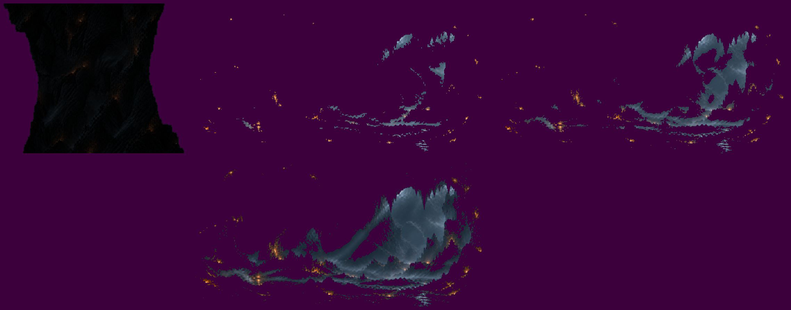

Fase 1 · a caverna · as transições
21/10/2026 · ← a rodada 1 · Recusadas: ele escolheu a faixa de rocha; o código delas saiu do jogo. · As três que você pediu para ver, no jogo e em velocidade real, ao lado da de hoje. A nave fica parada e intocável, e os inimigos escondidos. Cada célula mostra a entrada (a nave cruza a boca) e depois a saída (a nave atravessa o buraco). Nada commitado.
As quatro, lado a lado
Cada uma
1 · Cortina de rocha
Uma coluna de rocha da sua Parede, quase preta (a regra do plano mais perto, como o primeiro plano do chão), passa rente à câmera, na frente da nave, a 1100 px/s: fica ~0,6 s na tela. A troca acontece atrás dela: à direita da cortina já é o lugar novo, à esquerda ainda o velho. Os dois lados da coluna têm o contorno da boca da sua arte, apertados no meio, como uma estalactite encontrando uma estalagmite. Na saída, a mesma cortina leva a frente embora e fecha a montanha atrás.
2 · Olhos no escuro
Ao cruzar a boca, a tela escurece em três degraus (0,16 s) e a troca acontece no preto. A caverna volta pelas próprias luzes: as brasas e a claridade do fundo primeiro, depois os tons médios, e por fim o resto (1 s ao todo). A nave fica acesa. Na saída, o clarão de fora estoura e assenta (0,7 s).
3 · Íris de rocha
Um buraco com os dentes da boca da sua arte cresce a partir de onde a nave cruzou (0,8 s), com um aro escuro e um lábio cor de brasa na borda. Na saída, a frente se abre a partir do buraco e, atrás, a montanha se fecha da borda da tela para a nave (0,9 s).
Hoje · o desfazer
A rodada 1, para comparar: a rocha se desfaz a partir da boca em 8 quadros (0,6 s).

O que você decide
- Qual das três fica (ou nenhuma).
- Os ajustes da escolhida: a velocidade e a largura da cortina; os tempos do escuro e do clarão; a velocidade da íris.